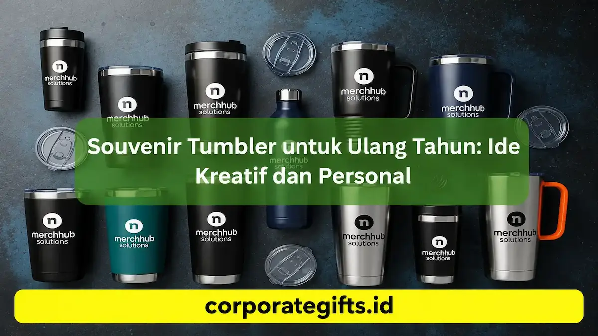

Corporate Gifts ID - Souvenir tumbler adalah pilihan hadiah ulang tahun yang sangat ideal karena menggabungkan nilai fungsionalitas harian, daya tahan jangka panjang, serta kemudahan personalisasi nama, angka usia, ilustrasi grafis, maupun pesan personal. Dibandingkan cinderamata sekali pakai, tumbler custom stainless steel menghadirkan kesan eksklusif dan ramah lingkungan yang memperkuat makna perayaan ulang tahun perorangan maupun korporat.
Perayaan ulang tahun, baik perayaan pribadi, momen syukuran kolega kantor, hingga perayaan hari jadi perusahaan (company anniversary), selalu menuntut pemilihan souvenir yang tidak hanya berkesan saat diterima, tetapi juga bermanfaat nyata dalam aktivitas sehari-hari.
Poin Kunci Souvenir Tumbler Ulang Tahun:
- Utilitas Nyata: Menjaga hidrasi harian dan mampu mempertahankan suhu minuman panas atau dingin selama 8-12 jam.
- Personalisasi Eksklusif: Dapat diukir nama, inisial, angka umur, atau ucapan spesial via grafir laser permanen.
- Material Food Grade: Terbuat dari Stainless Steel SUS 304 anti karat yang aman untuk kesehatan.
- Gaya Hidup Eco-Friendly: Mendukung pengurangan botol plastik sekali pakai di lingkungan kerja dan rumah tangga.
- Packaging Menawan: Kemasan tabung atau hardbox bespoke pita menambah kemewahan cinderamata.
Daftar Isi Artikel
- Mengapa Souvenir Tumbler Sangat Cocok untuk Ulang Tahun?
- 5 Inspirasi Ide Desain Tumbler Ulang Tahun yang Populer
- Tips Kustomisasi Souvenir Tumbler agar Awet & Elegan
- Tabel Komparasi Pilihan Model Tumbler Berdasarkan Karakter Acara
- Panduan Memilih Tumbler Berdasarkan Segmentasi Usia
- FAQ Seputar Souvenir Tumbler Ulang Tahun
- Kesimpulan: Hadiahkan Kenangan Bermakna
Mengapa Souvenir Tumbler Sangat Cocok untuk Ulang Tahun?
Souvenir tumbler menempati posisi teratas sebagai merchandise favorit untuk berbagai momen perayaan. Ada lima alasan utama mengapa tumbler selalu berhasil mencuri perhatian penerima:
- Fungsional dan Digunakan Sehari-hari: Tumbler termos dipakai setiap hari saat bekerja di kantor, kuliah, berolahraga di gym, maupun dalam perjalanan santai.
- Awet dan Tahan Lama: Dibandingkan souvenir berbahan plastik tipis atau makanan yang cepat habis, tumbler berbahan stainless steel food grade memiliki masa pakai hingga bertahun-tahun.
- Fleksibilitas Desain: Area permukaan tabung yang luas memungkinkan penerapan teknik grafir nama, tipografi modern, hingga ilustrasi grafis full color.
- Persepsi Nilai Tinggi: Tumbler berkualitas menghadirkan persepsi hadiah yang mahal dan dipersiapkan secara sungguh-sungguh oleh pemberi.
- Mendukung Kampanye Lingkungan: Penggunaan tumbler isi ulang berkontribusi langsung pada pengurangan limbah plastik di bumi.
5 Inspirasi Ide Desain Tumbler Ulang Tahun yang Populer
Agar cinderamata tumbler tidak terkesan monoton, Anda dapat mengeksplorasi ragam konsep visual yang disesuaikan dengan karakter orang yang berulang tahun:
1. Desain Minimalis & Monogram Inisial
Menampilkan nama panggilan dengan font tipografi sans-serif modern atau monogram inisial elegan pada tumbler berwarna doff (matte black, emerald green, atau navy blue). Konsep ini sangat digemari oleh kalangan profesional muda dan perayaan ulang tahun dewasa.
2. Ilustrasi Garis Wajah (Line Art) & Karakter
Mengubah foto wajah orang yang berulang tahun menjadi sketsa garis (line art) minimalis. Untuk ulang tahun anak-anak, gambar dapat digantikan dengan karakter superhero atau animasi favorit mereka.
3. Motif Floral & Nuansa Botanical
Aplikasi motif bunga-bunga lembut atau dedaunan tropis dengan warna pastel sangat cocok untuk perayaan garden party, ulang tahun remaja putri, maupun reuni syukuran keluarga.
4. Kutipan Motivasi & Milestones Usia
Mencantumkan kalimat afirmasi positif, ucapan doa, atau penanda angka usia penting (seperti "Sweet 17", "Fabulous 30", atau "Golden 50th") yang membangkitkan rasa syukur.
5. Corporate Anniversary Brand Style
Khusus perayaan ulang tahun perusahaan (milestone anniversary), padukan logo korporat dengan angka usia lembaga, tagline tahunan, dan nama masing-masing karyawan untuk memperkuat rasa kebersamaan.

Kustomisasi tumbler stainless steel dengan grafir laser nama memberikan sentuhan eksklusif.
Tips Kustomisasi Souvenir Tumbler agar Awet & Elegan
Untuk memastikan hasil akhir souvenir tumbler tampil sempurna, perhatikan aspek teknis berikut:
- Pilih Material Stainless Steel SUS 304: Pastikan dinding bagian dalam menggunakan baja nirkarat food grade ganda (double-wall vacuum insulation) yang tidak merubah rasa minuman dan bebas karat.
- Utamakan Teknik Laser Engraving: Grafir laser mengikis lapisan cat luar secara presisi sehingga tulisan nama berwarna perak metalik mengkilap dan tidak akan terkelupas saat dicuci.
- Gunakan Cetak UV untuk Warna Kompleks: Jika desain memiliki gradasi warna-warni, gunakan mesin digital UV printing beresolusi tinggi dengan lapisan matte finish.
- Perhatikan Sentuhan Packaging: Bungkus tumbler dalam hardbox silinder (tube box) atau gift box berpita satin lengkap dengan kartu ucapan personal (greeting card) di dalamnya.
Tabel Komparasi Pilihan Model Tumbler Berdasarkan Karakter Acara
Berikut rangkuman model tumbler custom terfavorit di CorporateGifts.ID untuk inspirasi souvenir ulang tahun Anda:
| Kategori & Model Tumbler | Kapasitas & Fitur | Teknik Kustomisasi Logo | Rekomendasi Acara |
|---|---|---|---|
| Tumbler Vacuum SUS 304 | 500 ml, Tahan panas/dingin 12 jam, Doff finish | Grafir Laser Silver Elegan / Sablon Doff | Ulang tahun dewasa, syukuran perpisahan, apresiasi rekan kantor |
| Smart Tumbler LED Temp | 500 ml, Layar sentuh indikator suhu, Filter teh | Laser Engraving Presisi & Digital Print UV | Kado ulang tahun eksekutif, direksi, mitra bisnis B2B |
| Compact Mini Pastel | 350 ml, Bodi ringan ergonomis, Tali silikon elastis | Digital UV Full Color & Sablon Lucu | Ulang tahun anak-anak, remaja, perayaan outdoor kasual |
| Eco Bamboo Wood Tumbler | 450 ml, Lapisan kayu bambu alami, Interior SUS 304 | Laser Engraving Kayu Alami / Hot Stamping | Company anniversary, tema perayaan rustic, komunitas lingkungan |
Panduan Memilih Tumbler Berdasarkan Segmentasi Usia
Menyelaraskan jenis tumbler dengan rentang usia tamu undangan akan membuat hadiah terasa semakin bernilai:
- Anak-Anak (Usia 3-12 Tahun): Pilih tumbler berukuran 250-350 ml dengan sedotan silikon terintegrasi, fitur anti tumpah, bodi berbobot ringan, serta motif karakter animasi berwarna cerah ceria.
- Remaja & Dewasa Muda (Usia 13-25 Tahun): Model tumbler ramping bergaya estetik Korea dengan palet warna pastel, kutipan motivasi, atau desain grafis ilustratif modern.
- Dewasa & Profesional Kantor (Usia 26 Tahun ke Atas): Tumbler termos berbalut warna netral monokromatik (hitam, abu-abu, navy) dengan inisial nama personal yang cocok dibawa ke ruang rapat.
FAQ Seputar Souvenir Tumbler Ulang Tahun
Kesimpulan: Hadiahkan Kenangan Bermakna
Souvenir tumbler custom menghadirkan perpaduan sempurna antara estetika, fungsionalitas harian, dan nilai sentimental yang abadi. Dengan memilih model berkualitas dan teknik kustomisasi yang tepat, perayaan ulang tahun akan meninggalkan kenangan manis yang selalu menyertai hari-hari para tamu undangan.
Ingin merancang souvenir tumbler kustom untuk perayaan ulang tahun atau event instansi Anda? Konsultasikan kebutuhan Anda bersama tim Corporate Gifts ID sekarang untuk mendapatkan preview desain digital gratis dan penawaran harga terbaik!